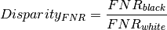
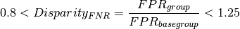

COMPAS Analysis using Aequitas¶
In 2016, Propublica reported on racial inequality in automated criminal risk assessment algorithms. The report is based off of this analysis. Using a clean version of the COMPAS dataset, found in the Propublica repo, we demostrate the use of the Aequitas bias reporting tool.
Northpointe’s COMPAS (Correctional Offender Management Profiling for Alternative Sanctions) is one of the widest used risk assessment tools, algorithms which are used in the criminal justice system to guide decisions such as how to set bail. The ProPublica dataset represents two years of COMPAS predicitons from Broward County, FL.
The data was preprocess for compatibility with Aequitas.
In [5]:
import pandas as pd
import seaborn as sns
from aequitas.group import Group
from aequitas.bias import Bias
from aequitas.fairness import Fairness
In [4]:
df = pd.read_csv("../../../examples/data/compas_for_aequitas.csv")
df.head()
Out[4]:
| entity_id | score | label_value | race | sex | age_cat | |
|---|---|---|---|---|---|---|
| 0 | 1 | 0.0 | 0 | Other | Male | Greater than 45 |
| 1 | 3 | 0.0 | 1 | African-American | Male | 25 - 45 |
| 2 | 4 | 0.0 | 1 | African-American | Male | Less than 25 |
| 3 | 5 | 1.0 | 0 | African-American | Male | Less than 25 |
| 4 | 6 | 0.0 | 0 | Other | Male | 25 - 45 |
Exploratory Analysis¶
** Risk assessment by race**
COMPAS produces a risk score that predicts a person’s likelihood of commiting a crime in the next two years. The output is a score between 0 and 10 that maps to low, medium or high. For Aequitas, we collapse this to a binary prediction. A score of 0 indicates a prediction of low risk according to COMPAS, while a 1 indicates high or medium risk.
This is based on ProPublica’s interpretation of Northpointe’s practioner guide.
"According to Northpointe’s practitioners guide, COMPAS “scores in the medium and high range
garner more interest from supervision agencies than low scores, as a low score would suggest
there is little risk of general recidivism,” so we considered scores any higher than “low” to
indicate a risk of recidivism."
We see a large difference in how these scores are distributed by race, with a majority of white and Hispanic people predicted as low risk (score = 0) and a majority of black people predicted high and medium risk.
In [9]:
g = sns.countplot(x="race", hue="score", data=df[df.race.isin(['African-American', 'Caucasian', 'Hispanic'])])

** Levels of recidivism **
This dataset includes information about whether or not the subject recidivated, and so we can directly test the accuracy of the predictions. First, we visualize the recidivsm rates across race.
Following ProPublica, we defined recidivism as a new arrest within two
years. (If a person recidivates, two_year_recid = 1). They “based
this decision on Northpointe’s practitioners guide, which says that its
recidivism score is meant to predict ‘a new misdemeanor or felony
offense within two years of the COMPAS administration date.’”
In [10]:
g = sns.countplot(x="race", hue="label_value", data=df[df.race.isin(['African-American', 'Caucasian', 'Hispanic'])])

Putting Aequitas to the task¶
The graph above shows the base rates for recidivism are higher for black defendants compared to white defendants (.51 vs .39). The prior graph shows that the predictions do not match the base rates.
Practitioners face the challenge of determining whether or not such patterns reflect bias or not. The fact that we have multiple ways to measure bias adds complexity to the decisionmaking process. With Aequitas, we provide a tool that automates the reporting of various fairnes metrics to aid in this process.
Applying Aequitas is a three step process represented by three python classes:
Group(): Define groups
Bias(): Calculate disparities
Fairness(): Assert fairness
Each class builds on the previous one expanding the output DataFrame.
Group()¶
Now, using the Aequitas bias detection tool, we calculate precise bias and disparity metrics for this dataset. First, we modify the dataframe to be compatible with the tool.
Aequitas expects a dataframe expects predefined columns score, and
label_value and treats all other columns, with few exceptions, as
attributes against which to test for disparities. In this cases we
include race, sex and age_cat.
In [17]:
g = Group()
xtab, _ = g.get_crosstabs(df)
model_id, score_thresholds 1 {'rank_abs': [3317]}
COUNTS::: race
African-American 3696
Asian 32
Caucasian 2454
Hispanic 637
Native American 18
Other 377
dtype: int64
COUNTS::: sex
Female 1395
Male 5819
dtype: int64
COUNTS::: age_cat
25 - 45 4109
Greater than 45 1576
Less than 25 1529
dtype: int64
The get_crosstabs() command tabulates a confusion matrix for each
subgroup and calculates commonly used metrics such as false positive
rate and false omission rate. It also provides counts by group and group
prevelances.
In [25]:
# Here's a subset of the crosstab data
xtab[['attribute_name', 'attribute_value', 'fpr', 'fnr', 'tpr', 'tnr', 'for', 'fdr', 'group_size']].round(2)
Out[25]:
| attribute_name | attribute_value | fpr | fnr | tpr | tnr | for | fdr | group_size | |
|---|---|---|---|---|---|---|---|---|---|
| 0 | race | African-American | 0.45 | 0.28 | 0.72 | 0.55 | 0.35 | 0.37 | 3696 |
| 1 | race | Asian | 0.09 | 0.33 | 0.67 | 0.91 | 0.12 | 0.25 | 32 |
| 2 | race | Caucasian | 0.23 | 0.48 | 0.52 | 0.77 | 0.29 | 0.41 | 2454 |
| 3 | race | Hispanic | 0.21 | 0.56 | 0.44 | 0.79 | 0.29 | 0.46 | 637 |
| 4 | race | Native American | 0.38 | 0.10 | 0.90 | 0.62 | 0.17 | 0.25 | 18 |
| 5 | race | Other | 0.15 | 0.68 | 0.32 | 0.85 | 0.30 | 0.46 | 377 |
| 6 | sex | Female | 0.32 | 0.39 | 0.61 | 0.68 | 0.24 | 0.49 | 1395 |
| 7 | sex | Male | 0.32 | 0.37 | 0.63 | 0.68 | 0.33 | 0.36 | 5819 |
| 8 | age_cat | 25 - 45 | 0.33 | 0.37 | 0.63 | 0.67 | 0.32 | 0.39 | 4109 |
| 9 | age_cat | Greater than 45 | 0.17 | 0.57 | 0.43 | 0.83 | 0.24 | 0.46 | 1576 |
| 10 | age_cat | Less than 25 | 0.54 | 0.26 | 0.74 | 0.46 | 0.42 | 0.36 | 1529 |
Interpreting the crosstab
We see that African-Americans have a false positive rate (fpr) of
45%, while Caucasians have a false positive rate of only 23%. This means
that black people are far more likely to be falsely labeled as high-risk
than white people. On the otherhand false ommision rates (for) and
false discovery rates (fdr) are much closer for those two groups.
Bias()¶
We calculate disparities as a ratio of a metric for a group of interest compared to a base group. For example, the False Negative Rate Disparity for black defendants vis-a-vis whites is:

Below, we use get_disparity_predefined_groups which allows us to
choose base groups that clarify the output for the practitioner.
Aequitas Bias() class includes two additional get disparity
functions, which automate base group selection.
In [27]:
b = Bias()
bdf = b.get_disparity_predefined_groups(xtab, {'race':'Caucasian', 'sex':'Male', 'age_cat':'25 - 45'})
get_disparity_predefined_group()
The results are appended to the crosstab dataframe. We see a slice of this below.
In [29]:
bdf.columns
Out[29]:
Index(['attribute_name', 'attribute_value', 'k', 'model_id', 'score_threshold',
'tpr', 'tnr', 'for', 'fdr', 'fpr', 'fnr', 'npv', 'precision', 'pp',
'pn', 'ppr', 'pprev', 'fp', 'fn', 'tn', 'tp', 'group_label_neg',
'group_label_pos', 'group_size', 'total_entities', 'prev',
'ppr_disparity', 'pprev_disparity', 'fdr_disparity', 'for_disparity',
'fpr_disparity', 'fnr_disparity', 'ppr_ref_group_value',
'pprev_ref_group_value', 'fdr_ref_group_value', 'for_ref_group_value',
'fpr_ref_group_value', 'fnr_ref_group_value'],
dtype='object')
In [30]:
bdf[['attribute_name', 'attribute_value', 'ppr_disparity', 'pprev_disparity', 'fdr_disparity', 'for_disparity',
'fpr_disparity', 'fnr_disparity']]
Out[30]:
| attribute_name | attribute_value | ppr_disparity | pprev_disparity | fdr_disparity | for_disparity | fpr_disparity | fnr_disparity | |
|---|---|---|---|---|---|---|---|---|
| 0 | race | African-American | 2.545667 | 1.690224 | 0.906085 | 1.213154 | 1.912093 | 0.586416 |
| 1 | race | Asian | 0.009368 | 0.718384 | 0.611748 | 0.433839 | 0.370749 | 0.698482 |
| 2 | race | Caucasian | 1.000000 | 1.000000 | 1.000000 | 1.000000 | 1.000000 | 1.000000 |
| 3 | race | Hispanic | 0.222482 | 0.857099 | 1.120464 | 1.001616 | 0.915887 | 1.165140 |
| 4 | race | Native American | 0.014052 | 1.915691 | 0.611748 | 0.578453 | 1.598854 | 0.209544 |
| 5 | race | Other | 0.092506 | 0.602147 | 1.115085 | 1.048203 | 0.629057 | 1.417970 |
| 6 | sex | Female | 0.216801 | 0.904348 | 1.336425 | 0.734738 | 0.990343 | 1.055810 |
| 7 | sex | Male | 1.000000 | 1.000000 | 1.000000 | 1.000000 | 1.000000 | 1.000000 |
| 8 | age_cat | 25 - 45 | 1.000000 | 1.000000 | 1.000000 | 1.000000 | 1.000000 | 1.000000 |
| 9 | age_cat | Greater than 45 | 0.204782 | 0.533914 | 1.192804 | 0.746232 | 0.503031 | 1.531238 |
| 10 | age_cat | Less than 25 | 0.519231 | 1.395369 | 0.935673 | 1.313873 | 1.621868 | 0.696781 |
The differences in False Positive Rates, noted above, are clarified
using the disparity ratio (fpr_disparity). Black people are falsely
identified as being high or medium risks 1.9 times the rate for white
people. As seen above, False Discovery Rates have much less disparity
(fdr_disparity). False discovery is the fraction of false postives
in a group within those predicted positive in the group. COMPAS is
calibrated to have these balanced over groups.
Notice that reference groups have disparity = 1 by design.
Fairness()¶
Finally, the Fairness() class provides three functions that provide
a high level summary. Using FPR disparity as an example and the default
fairness threshold, we have:

The Fairness().get_group_value_fairness() function builds on the
previous dataframe.
In [40]:
f = Fairness()
fdf = f.get_group_value_fairness(bdf)
We can assess fairness at various levels of detail.
In [47]:
gaf = f.get_group_attribute_fairness(fdf)
gaf
Out[47]:
| model_id | score_threshold | attribute_name | Statistical Parity | Impact Parity | FDR Parity | FPR Parity | FOR Parity | FNR Parity | TypeI Parity | TypeII Parity | Unsupervised Fairness | Supervised Fairness | |
|---|---|---|---|---|---|---|---|---|---|---|---|---|---|
| 0 | 1 | binary 0/1 | age_cat | False | False | True | False | False | False | False | False | False | False |
| 1 | 1 | binary 0/1 | race | False | False | False | False | False | False | False | False | False | False |
| 2 | 1 | binary 0/1 | sex | False | True | False | True | False | True | False | False | False | False |
In [46]:
fdf[['attribute_name', 'attribute_value','Statistical Parity',
'Impact Parity', 'FDR Parity', 'FPR Parity', 'FOR Parity', 'FNR Parity',
'TypeI Parity', 'TypeII Parity', 'Unsupervised Fairness',
'Supervised Fairness']]
Out[46]:
| attribute_name | attribute_value | Statistical Parity | Impact Parity | FDR Parity | FPR Parity | FOR Parity | FNR Parity | TypeI Parity | TypeII Parity | Unsupervised Fairness | Supervised Fairness | |
|---|---|---|---|---|---|---|---|---|---|---|---|---|
| 0 | race | African-American | False | False | True | False | True | False | False | False | False | False |
| 1 | race | Asian | False | False | False | False | False | False | False | False | False | False |
| 2 | race | Caucasian | True | True | True | True | True | True | True | True | True | True |
| 3 | race | Hispanic | False | True | True | True | True | True | True | True | False | True |
| 4 | race | Native American | False | False | False | False | False | False | False | False | False | False |
| 5 | race | Other | False | False | True | False | True | False | False | False | False | False |
| 6 | sex | Female | False | True | False | True | False | True | False | False | False | False |
| 7 | sex | Male | True | True | True | True | True | True | True | True | True | True |
| 8 | age_cat | 25 - 45 | True | True | True | True | True | True | True | True | True | True |
| 9 | age_cat | Greater than 45 | False | False | True | False | False | False | False | False | False | False |
| 10 | age_cat | Less than 25 | False | False | True | False | False | False | False | False | False | False |
In this case, our base groups are Caucasian for race, Male for gender, and 25-45 for age_cat. By construction, the base group has supervised fairness. (The disparity ratio is 1). Relative to the base groups, the COMPAS predictions only provide supervised fairness to one group, Hispanic.
Above, the African-American false omission and false discovemry are within the bounds of fairness. This result is expected because COMPAS is calibrated. (Given calibration, it is surprising that Asian and Native American rates are so low. This may be a matter of having few observations for these groups.)
On the other hand, African-Americans are roughly twice as likely to have false positives and 40 percent less likely to false negatives. In real terms, 44.8% of African-Americans who did not recidivate were marked high or medium risk (with potential for associated penalties), compared with 23.4% of Caucasian non-reoffenders. This is unfair and is marked False below.